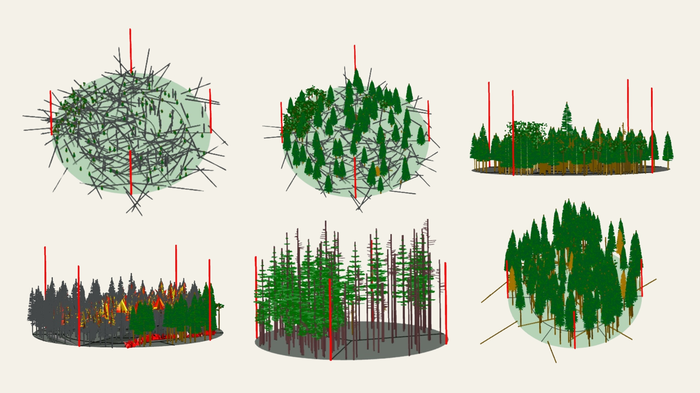

Stewardship in an era of ecological pressure
Over the past several centuries, colonial land management and climate change have contributed to an era of unprecedented ecological pressures. While wildfire, insect outbreaks, and disease are natural processes, the scale at which they now occur is ecologically, socially, and economically devastating. It’s hard to imagine that humans could have such an impact on the landscape. However, if this moment in time is, in part, the result of human action, then it is also proof of our capacity to enact large-scale ecological change.
For millennia, indigenous people have stewarded ecosystems through observation, adaptation, and care. My work uses contemporary technology to uplift and validate traditional ecological knowledge, rather than replace it, in support of intentional and informed land stewardship in the 21st century.

Galleher Geospatial
Specilizations
Available Assistance

Geospatial
- ArcGIS (ESRI Suite) & QGIS
- Spatial analysis & modeling (Python, R, SQL)
- Raster analysis, remote sensing & spectral indices (Google Earth Engine, Landsat)
- Geospatial data visualization & cartography
- Web & interactive mapping (Leaflet, Folium)
- Spatial data management (PostGIS, geodatabases)
- Web development (HTML, CSS, JavaScript)
Wildfire & Forestry
- Defensible space & home hardening inspection
- Ecological modeling (Forest Vegetation Simulator)
- Fire Fighter Type 2 certified - presribed fire support
- Wilderness First Aid certified - remote field research & backcountry operations
- Wet lab techniques (CTAB DNA extraction, microscopy, sample processing)
- Forest inventory & mensuration
- Ecological identification & classification (plants, insects, soils, microbial indicators)
Grant Development & Program Strategy
- Grant writing, budget development & program management
- Public presentations and scientific communication
- Stakeholder outreach
Tree Tech
Click to learn more about the tools that make Tree Tech.